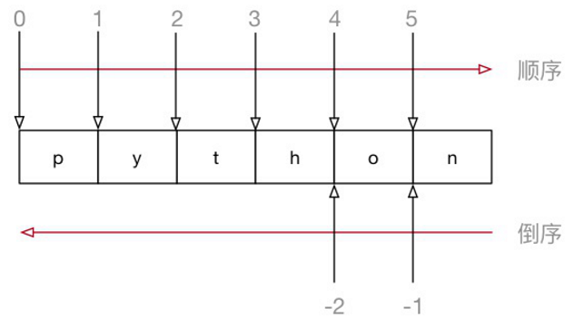

<!DOCTYPE lake>
<h2 data-lake-id="UEuBF" data-lake-index-type="2" id="UEuBF"><span data-lake-id="uecf5e431" id="uecf5e431">切片简介</span></h2><p data-lake-id="uffee7779" id="uffee7779"><span data-lake-id="u0f9c91bb" id="u0f9c91bb">取一个</span><code data-lake-id="u74ea8184" id="u74ea8184"><span data-lake-id="u59cf3a38" id="u59cf3a38">str</span></code><span data-lake-id="u812ba853" id="u812ba853">、</span><code data-lake-id="uee6495f2" id="uee6495f2"><span data-lake-id="u5ae2da99" id="u5ae2da99">list</span></code><span data-lake-id="ue78fc7d6" id="ue78fc7d6">、</span><code data-lake-id="u79ba2bce" id="u79ba2bce"><span data-lake-id="ub6eb9275" id="ub6eb9275">tuple</span></code><span data-lake-id="u3745005c" id="u3745005c">的部分元素是非常常见的操作</span></p><ul list="u87d9e8f0"><li data-lake-id="ub6b57271" fid="u3a0987cc" id="ub6b57271"><span data-lake-id="u6b6cdfcd" id="u6b6cdfcd">切片 译自英文单词</span><code data-lake-id="ufc2831cd" id="ufc2831cd"><span data-lake-id="u3a926d73" id="u3a926d73">slice</span></code><span data-lake-id="u6bf3b5bd" id="u6bf3b5bd">,指的是一部分</span></li><li data-lake-id="ube4f64e6" fid="u3a0987cc" id="ube4f64e6"><span data-lake-id="ub397dd4b" id="ub397dd4b">切片 根据 </span><strong><span data-lake-id="u4fb7433b" id="u4fb7433b">步长</span></strong><code data-lake-id="uda0d2c0a" id="uda0d2c0a"><span data-lake-id="u27ab8f0a" id="u27ab8f0a">step</span><strong><span data-lake-id="u2aad3e26" id="u2aad3e26"> </span></strong></code><span data-lake-id="ube0e4700" id="ube0e4700">从原序列中取出</span><strong><span data-lake-id="u84b92c8b" id="u84b92c8b">一部分元素</span></strong><span data-lake-id="u27d9333e" id="u27d9333e">组成新序列</span></li><li data-lake-id="ubb4e0cc5" fid="u3a0987cc" id="ubb4e0cc5"><span data-lake-id="u9a084a7f" id="u9a084a7f">切片适用于 </span><strong><span data-lake-id="ue4fc9152" id="ue4fc9152">字符串、列表、元组</span></strong></li></ul><h2 data-lake-id="ISiXd" data-lake-index-type="2" id="ISiXd"><span data-lake-id="u14ea821a" id="u14ea821a">切片的格式</span></h2><p data-lake-id="u1b1d1a20" id="u1b1d1a20"><code data-lake-id="ud9da229b" id="ud9da229b"><span data-lake-id="u2e14124d" id="u2e14124d">字符串[开始索引:结束索引:步长]</span></code></p><blockquote data-lake-id="udc7d29d1" id="udc7d29d1"><p data-lake-id="u4ad32b9a" id="u4ad32b9a"><span data-lake-id="u4e4867cb" id="u4e4867cb">包含开始索引, 不包含结束索引</span></p></blockquote><h3 data-lake-id="MCXVJ" data-lake-index-type="2" id="MCXVJ"><span data-lake-id="uc46b8849" id="uc46b8849">需求</span></h3><span class="yuque-card-unsupported">[codeblock]</span><h3 data-lake-id="fBv7d" data-lake-index-type="2" id="fBv7d"><span data-lake-id="ue32fc15e" id="ue32fc15e">代码</span></h3><span class="yuque-card-unsupported">[codeblock]</span><p data-lake-id="ue02c9acd" id="ue02c9acd"><span data-lake-id="ueb7207a7" id="ueb7207a7">步长默认为1，可以省略，如下</span></p><span class="yuque-card-unsupported">[codeblock]</span><p data-lake-id="u4660bfc2" id="u4660bfc2"><span data-lake-id="ua5525cc7" id="ua5525cc7">开始索引为0，可以省略，如下</span></p><span class="yuque-card-unsupported">[codeblock]</span><p data-lake-id="u145a5bea" id="u145a5bea"><span data-lake-id="ued0233e0" id="ued0233e0">如果到末尾结束，可以省略结束索引，例如取后三个字“</span><strong><span data-lake-id="u99024aed" id="u99024aed">欢迎您</span></strong><span data-lake-id="u00961545" id="u00961545">”</span></p><span class="yuque-card-unsupported">[codeblock]</span><h2 data-lake-id="Q2dHy" data-lake-index-type="2" id="Q2dHy"><span data-lake-id="udc6cd1ad" id="udc6cd1ad">索引的正序和倒序</span></h2><p data-lake-id="u82a9b506" id="u82a9b506"><span data-lake-id="u7f8f13dd" id="u7f8f13dd">索引分为正序和倒序</span></p><ul list="u67ed6ad0"><li data-lake-id="u66ceb5c8" fid="ua8b37943" id="u66ceb5c8"><span data-lake-id="ufef88ce4" id="ufef88ce4">正序：从左向右，</span><code data-lake-id="ued92f2c8" id="ued92f2c8"><span data-lake-id="u584cc518" id="u584cc518">0</span></code><span data-lake-id="u9fe230eb" id="u9fe230eb">开始</span></li><li data-lake-id="u7b9dee7c" fid="ua8b37943" id="u7b9dee7c"><span data-lake-id="ub9022b64" id="ub9022b64">倒序：从右向左，</span><code data-lake-id="u538c5915" id="u538c5915"><span data-lake-id="u6eb64e37" id="u6eb64e37">-1</span></code><span data-lake-id="u8d45fc14" id="u8d45fc14">开始</span></li></ul><p data-lake-id="u4d505cfd" id="u4d505cfd"></p><h3 data-lake-id="WqMvF" data-lake-index-type="2" id="WqMvF"><span data-lake-id="u5c3deb08" id="u5c3deb08">需求</span></h3><span class="yuque-card-unsupported">[codeblock]</span><h3 data-lake-id="c0ImW" data-lake-index-type="2" id="c0ImW"><span data-lake-id="ube7eb4eb" id="ube7eb4eb">代码</span></h3><span class="yuque-card-unsupported">[codeblock]</span><h2 data-lake-id="Buar1" data-lake-index-type="2" id="Buar1"><span data-lake-id="u0f764fb5" id="u0f764fb5">步长为负数</span></h2><p data-lake-id="uf7e317cf" id="uf7e317cf"><span data-lake-id="uf3e95574" id="uf3e95574">步长也可以为负数，代表逆序切片</span></p><h3 data-lake-id="opdOy" data-lake-index-type="2" id="opdOy"><span data-lake-id="ua4f3fb73" id="ua4f3fb73">需求</span></h3><span class="yuque-card-unsupported">[codeblock]</span><h3 data-lake-id="cgNpR" data-lake-index-type="2" id="cgNpR"><span data-lake-id="uf4f87e86" id="uf4f87e86">代码</span></h3><span class="yuque-card-unsupported">[codeblock]</span><blockquote class="lake-alert lake-alert-warning" data-lake-id="ud65cd830" id="ud65cd830"><p data-lake-id="u367b3866" id="u367b3866"><span data-lake-id="u429258fc" id="u429258fc">注意：步长为负，索引也应该逆序索引</span></p></blockquote>